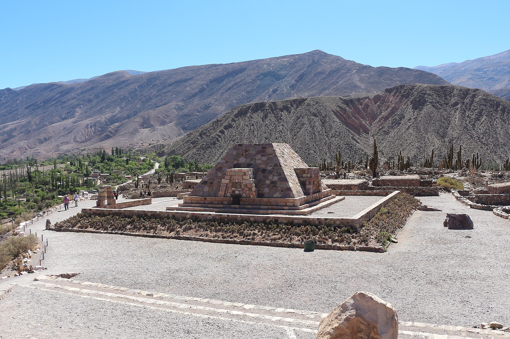

Las cuatro regiones
Cada zona es otro país
Del altiplano a la selva. Elegí la que te llama; cada lugar cuenta cómo llegar.
 Quebrada
El corredor de los cerros de colores: Purmamarca, Tilcara, Humahuaca y el Hornocal a 4.350 m.
4.350 mSerranía del Hornocal
Servicios diarios por la RN 9 desde la Terminal de San Salvador.
Quebrada
El corredor de los cerros de colores: Purmamarca, Tilcara, Humahuaca y el Hornocal a 4.350 m.
4.350 mSerranía del Hornocal
Servicios diarios por la RN 9 desde la Terminal de San Salvador.
 Puna
El altiplano infinito: salares, vicuñas y pueblos de adobe.
3.450 mSalinas Grandes
Puna
El altiplano infinito: salares, vicuñas y pueblos de adobe.
3.450 mSalinas Grandes
 Yungas
La selva de niebla: Calilegua, senderos y otro verde.
P.N. Calilegua
Yungas
La selva de niebla: Calilegua, senderos y otro verde.
P.N. Calilegua
 Valles
Cerca de la capital: termas, diques y tardes lentas.
Termas de Reyes
Valles
Cerca de la capital: termas, diques y tardes lentas.
Termas de Reyes
Por eso funciona
El plan que respeta el reloj del colectivo
Cada tramo se apoya en horarios publicados. Si el día no cierra, te avisamos antes de salir.
Armá tu travesíaPróximos servicios · Terminal a Tilcara
- 08:10Panamericano · llegada ~09:55Horario publicado · horario-quebrada
- 09:30Balut · llegada ~11:15Horario publicado · horario-quebrada
- 11:40Evelia · llegada ~13:25Horario publicado · horario-quebrada
Imperdibles
Los lugares que se cuentan
Con su dato honesto: cuánto toma, cómo se llega y cuándo conviene.
01
Cerro de los Siete ColoresQuebrada · Purmamarca
Los tonos del cerro rodean el pueblo; el Paseo de los Colorados se recorre a pie.
02
Serranía del HornocalQuebrada · Humahuaca
El mirador de los catorce colores; se llega con traslado local desde Humahuaca.
04
Salinas GrandesPuna
El salar de altura entre Jujuy y Salta; la visita se hace por accesos habilitados.

Pucará de TilcaraQuebrada · Tilcara Fortaleza prehispánica sobre el río Grande, con senderos y museo. 03
Serranía del HornocalQuebrada · Humahuaca
El mirador de los catorce colores; se llega con traslado local desde Humahuaca.
04
Salinas GrandesPuna
El salar de altura entre Jujuy y Salta; la visita se hace por accesos habilitados.

“Un viaje no es una sucesión de visitas, es la historia que se cuenta después.”